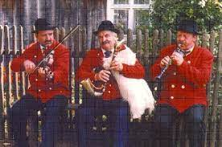

Kultura
Na kulturę ludową Wielkopolski składają się tańce i śpiewy regionalne
pielęgnowane obecnie w zespołach folklorystycznych, a także lokalna gwara,
zwyczaje czy tradycyjna kuchnia.
W wiejskim krajobrazie ciągle jeszcze są obecne wiatraki i drewniane kościółki.
